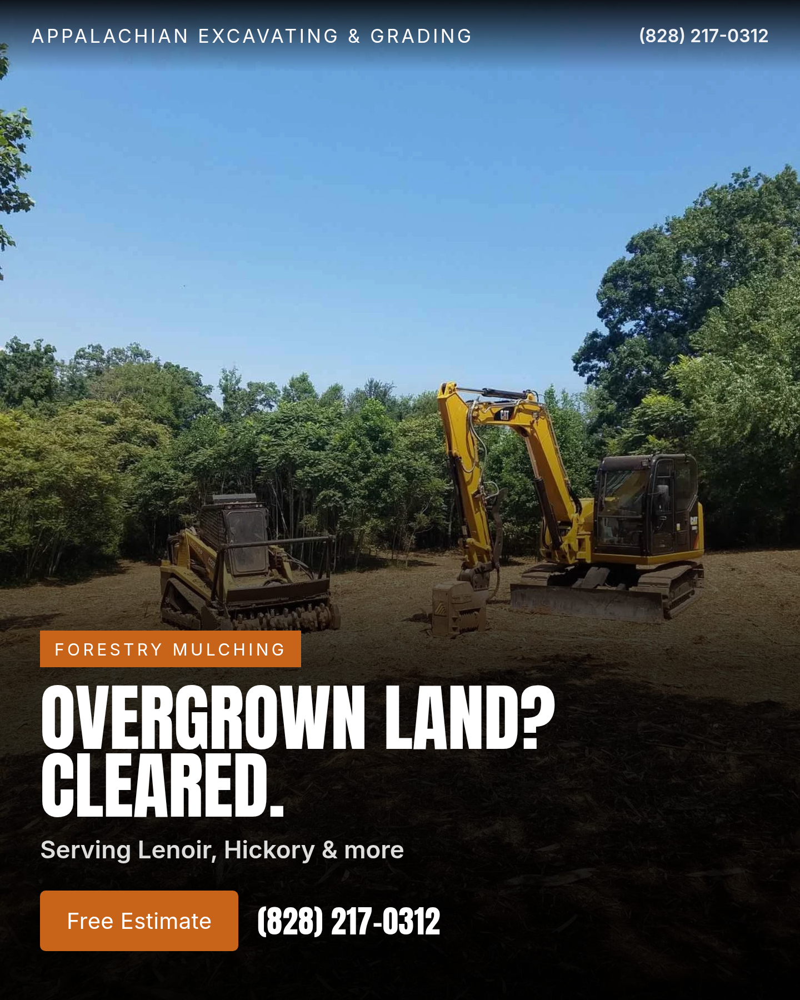
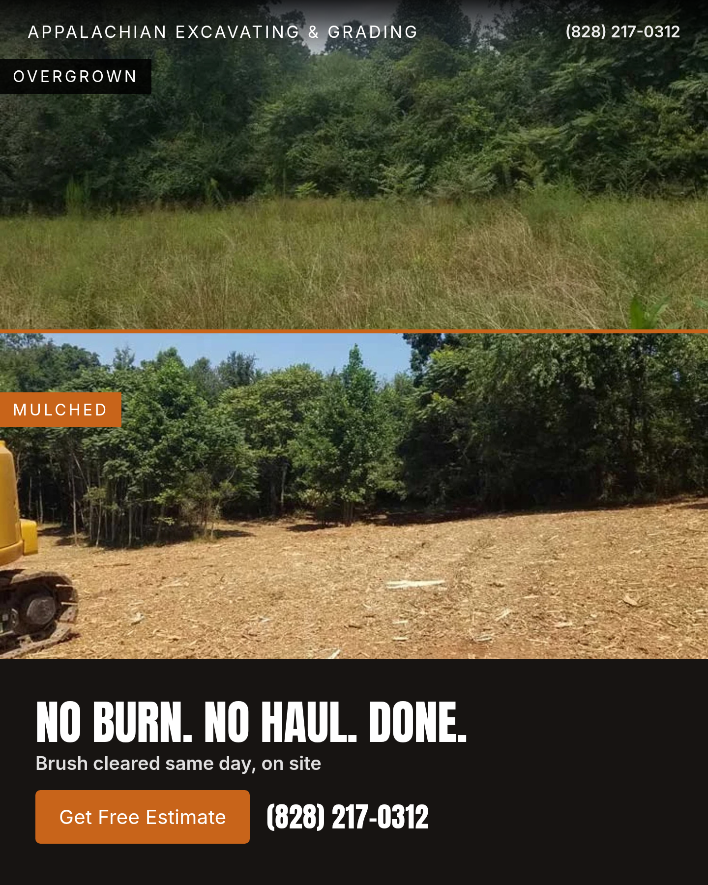
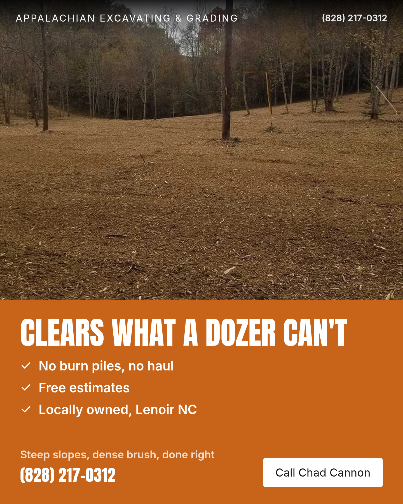

Waist-high brush and briars? Our mulching heads grind it down on site, no burning, no hauling. Serving Lenoir, Hickory and Morganton.

Three creatives for Appalachian Excavating & Grading (Lenoir, NC) —
service: Forestry Mulching. Every photograph is the Client's own. The copy was
written by Claude Sonnet from the intake record; the layout is HTML/CSS composited over the photo.
Images are 1440×1800, Meta's recommended feed size.
The two questions: would a contractor pay for these, and would they run them?
Waist-high brush and briars? Our mulching heads grind it down on site, no burning, no hauling. Serving Lenoir, Hickory and Morganton.

No burning piles, no hauling debris. We grind overgrown brush right where it stands, Caldwell and Burke County.

Steep, brushy acreage a dozer can't touch? Our mulching clears it in place. Free estimates, locally owned in Lenoir NC.
